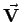
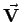

Inhalt Index DeskTop Bronstein

 Vektoranalysis und Feldtheorie Räumliche Differentialoperationen Nablaoperator, Laplace-Operator
Vektoranalysis und Feldtheorie Räumliche Differentialoperationen Nablaoperator, Laplace-Operator


Nablaoperator wird ein symbolischer Vektor  genannt, der häufig zur Darstellung von räumlichen Differentialoperationen benutzt wird und dessen Einführung Berechnungen in der Vektoranalysis vereinfacht. Für die Operatoren Gradient, Vektorgradient, Divergenz und Rotation gelten die folgenden Formeln:
genannt, der häufig zur Darstellung von räumlichen Differentialoperationen benutzt wird und dessen Einführung Berechnungen in der Vektoranalysis vereinfacht. Für die Operatoren Gradient, Vektorgradient, Divergenz und Rotation gelten die folgenden Formeln:
Gradient von
| (13.65a) |
| (13.65b) |
 |
(13.65c) |
| (13.65d) |
In kartesischen Koordinaten gilt:
| (13.65e) |
Die Komponenten des Nablaoperators sind als partielle Ableitungsoperatoren aufzufassen, d.h., das Symbol  schreibt die partielle Ableitung nach x vor, wobei die anderen Variablen als Konstanten betrachtet werden. Die Formeln für die räumlichen Differentialoperatoren in kartesischen Koordinaten ergeben sich durch formale Multiplikation dieses Vektoroperators mit dem Skalar U oder dem Vektor .
schreibt die partielle Ableitung nach x vor, wobei die anderen Variablen als Konstanten betrachtet werden. Die Formeln für die räumlichen Differentialoperatoren in kartesischen Koordinaten ergeben sich durch formale Multiplikation dieses Vektoroperators mit dem Skalar U oder dem Vektor .